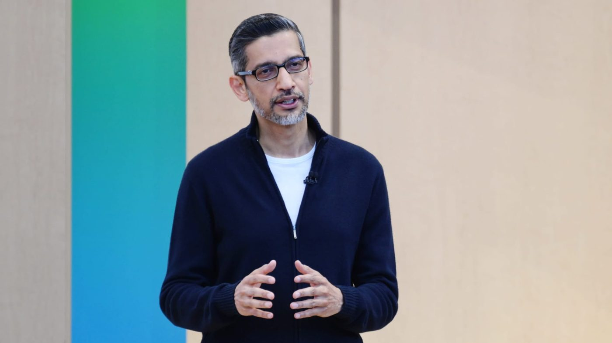

Funding rounds aren't milestones. It shouldn't be your goal to raise a series A. It should be your goal not to need to.
The AI spending bill comes due: Alphabet's worst day ever drags Wall Street to its worst week since June

Alphabet shares fell roughly 13% on Thursday, erasing about $500 billion in value — the stock's worst day on record — after search revenue (+12% to $63.35B) missed estimates, free cash flow swung to −$9.07B, and Google lifted its capex outlook to $195–205B. Amazon followed with a slight revenue and EPS miss and a deeply negative trailing free cash flow despite AWS growing 39% — its fastest in about five years. On Friday the S&P 500 fell 1.8% to 7,580.07 and the Nasdaq 2.9% to 25,437.00, capping a third straight losing week.